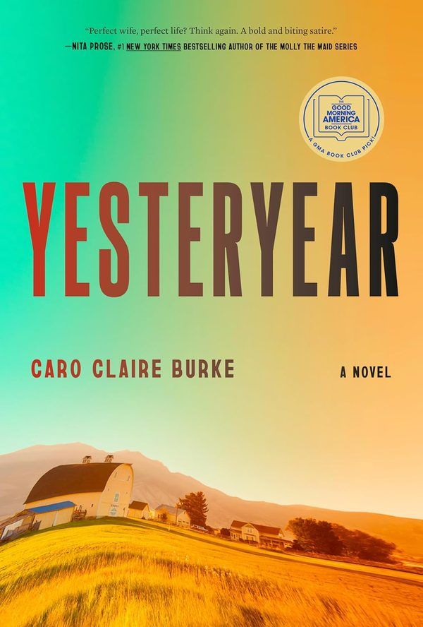

June 2026
Yesteryear
Literary FictionJohn Macausland has spent his life in the shadow of the father he was named for, a revered figure in their fading Glasgow shipyard town. When his father dies, John inherits the name, the debts, and a community that expects him to become a man he never chose to be. Douglas Stuart returns to the tenderness of his Booker-winning fiction with a story about inheritance, masculinity, and the slow work of becoming your own person.